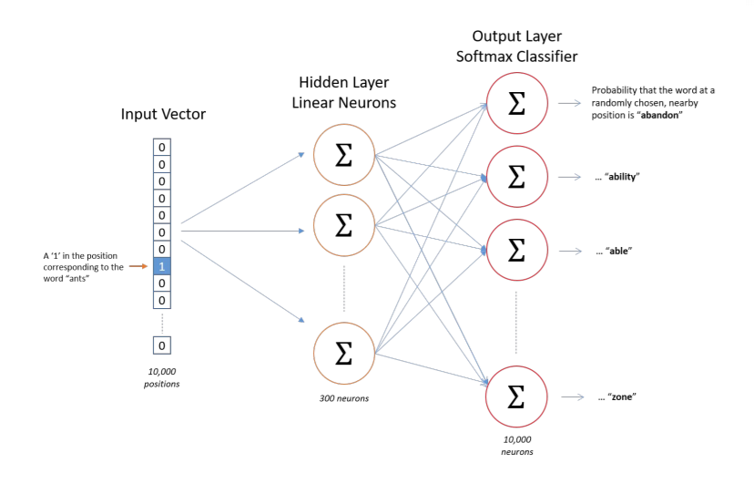

Word2Vec
As mentioned in the Word Embeddings notebook, there are many ways to train a Neural Network to produce a Word Embedding matrix for a given vocabulary.
One of the more popular implementations of this is TensorFlow’s Word2Vec. This notebook should provide a high-level intuition of this training approach.
Fake Task
The key takeaway for understanding how we fit an embedding layer is that we set our data up to solve an arbitrary problem when iterating over a corpus of text. For instance:
Given a random context word,
c, how likely is it that we’ll see a target word,t, withinNspaces from the context?
Visually, this looks like the following
from IPython.display import Image
Image('images/word2vec_task.png')
Because this spits out to a softmax classifier, the outputs are calculated as
$Pr(t\vert c) = \frac{e^{\Theta^T e_c}}{\sum_j e^{\Theta^T_j e_c}}$
This means that we’re learning both the Embedding Matrix, E, and some throw-away matrix, Theta, that we won’t use after training.
However, this gets tricky when considering compute costs. Even in a 1000-word vocabulary (considered pretty small for text data), we’re doing a ton of summing in these denominator terms, then again when calculating the cost function
$\mathcal{L}(\hat{y}, y) = - \sum y_i log(\hat{y_i})$
Not ideal. Instead we might try…
Negative Sampling
Same idea. We want to build a fake task with the ultimate goal of extracting an Embedding Matrix, E.
Except this time, we’re going to be more thoughtful about the way we sample our training data. Consider a sentence
The quick brown fox jumped over the lazy dog
- We’d start, as before, by picking a context word:
fox - Then we pick a random word within
Nspaces from it. We’ll saydog. Now (this is where it’s different), we’ll generate
krandom words from our vocabulary that aren’t withinNoffoxapple, door, nebraska, eerie, his
Finally we construct tuples of the form
(fox, dog, 1) (fox, apple, 0) (fox, door, 0) (fox, nebraska, 0) (fox, eerie, 0) (fox, his, 0)
to optimize the equation
$Pr(y=1 \vert c, t) = \sigma(\Theta^t e_c)$
Or “given this context word and this taret word, how likely is it that they’re within proximity of one another?”
So instead of training on 10k values in our softmax layer each step, we’re only training k+1 binary classification tasks at a time.